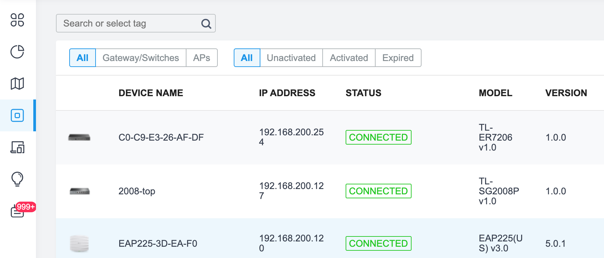

SSH control and monitoring¶
You can control and monitor the Omada SDN devices when it is in standalone mode. When the device is adopted and controlled by the Omada SDN controller, the SSH connection is still available, but only for monitoring.
The SSH on Omada devices is disabled by default. You can setup the administration credential directly through the web GUI or through the site settings on the controller.
Enable SSH connection in standalone mode¶
Note
The default IP of the Omada router is 192.168.0.1, the switch and EAP devices acquiring dynamic IP through DHCP. When there is no DHCP server on the network, the switch fall back IP is 192.168.0.1 and the EAP fall back IP is 192.168.0.254. The default user name is admin with default password admin.
Omada switch¶
Login to the web GUI and change the administrator credential. The same credential will be used in SSH connection as well. Navigate to the Security > SSH Config and check on the SSH enable. Then, click Apply to enable the SSH. Remember to click to save the configuration.
{kind=link}
Omada EAP¶
Login to the web GUI and change the administrator credential. The same credential will be used in SSH connection as well. Navigate to the Management > SSH and check on the SSH login enable. Then, click Save to enable the SSH.
Omada Router¶
The ER7206 and ER605 do not support client SSH access.
Enable SSH connection in controller mode¶
Navigate to the SSH settings by selecting your site and then Settings > Services > SSH Enable the SSH Login Then click on Apply to enable the SSH. The SSH will be enabled in the whole site. Then, you can access the switches and EAPs through SSH.
To find out the IP address of the device, just navigate to Devices page.
The SSH credential is the device account. When you setup a new site, the controller will choose a random password for you. You can change the credential if you want. Go to the Settings > Site and then scroll down to the Device Account section to get the user name and password. Click to reveal the password.
{kind=link}
SSH from macOS¶
When you try to access the Omada switch directly you may see the error message:
user@MacBook-Pro ~ % ssh admin@192.168.0.1
Unable to negotiate with 192.168.0.1 port 22: no matching key exchange method found. Their offer: diffie-hellman-group1-sha1
Which means your macOS is not supporting the key exchange method. You can follow the steps below to enable the SSH connection.
Open terminal
Edit the SSH configuration file
user@MacBook-Pro ~ % sudo nano /etc/ssh/ssh_config
Password:
Enter the administrator password.
go to the bottom of the file and insert these lines:
Ciphers aes128-ctr,aes192-ctr,aes256-ctr,aes128-cbc,3des-cbc
MACs hmac-md5,hmac-sha1,umac-64@openssh.com
HostkeyAlgorithms ssh-dss,ssh-rsa
KexAlgorithms +diffie-hellman-group1-sha1
Click
Ctrl-Xand thenYto save the fileThen try to access the switch again:
user@MacBook-Pro ~ % ssh admin@192.168.0.1
admin@192.168.0.1's password:
TL-SG3210>